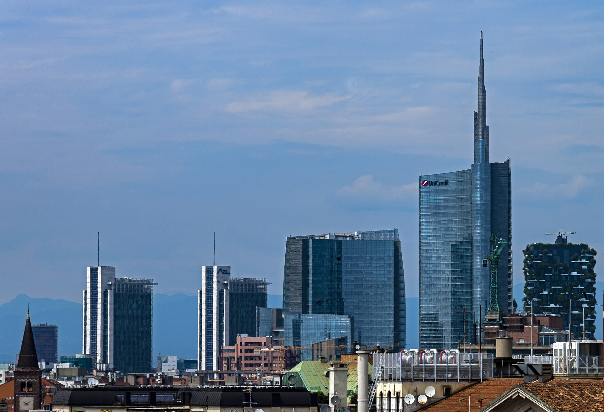

PATRI REALTY · PRÉVIA EDITORIAL · APURAÇÃO 22/10/2026 · NÃO PUBLICADO EM PRODUÇÃO
Bosco Verticale: o que avaliar em um empreendimento sustentável
O Bosco Verticale, em Milão, ajuda a discutir vegetação, manutenção e desempenho. Saiba distinguir uma arquitetura verde de resultados ambientais comprovados.

Uma referência existente, não um lançamento
O projeto é apresentado pelo escritório Stefano Boeri Architetti como uma experiência de integração entre edifícios e vegetação. A engenharia e as condições de implantação também aparecem na documentação da Tekne. Aqui, o Bosco Verticale funciona como estudo de caso: não como novidade imobiliária de 2026 nem como modelo automaticamente replicável no Brasil. [1][2]
Nossa leitura editorial é que a imagem de uma fachada plantada pode abrir uma conversa importante, mas não encerra a avaliação ambiental. Um comprador precisa saber como o conjunto funciona depois que a obra termina.
Vegetação precisa de um plano de cuidado
Para examinar qualquer proposta semelhante, pergunte quem responde por irrigação, podas, substituição de espécies, acesso de manutenção e segurança do trabalho. Solicite a separação entre despesas das unidades e do condomínio.
Também vale pedir a justificativa de escolha das espécies para o clima e para a exposição da fachada. Estas são perguntas de diligência propostas pela Patri Realty. Não apresentamos uma auditoria independente do consumo ou do balanço de carbono do edifício italiano.
Cinco dimensões para comparar projetos
Organize a comparação por energia, água, materiais, conforto e gestão. Em cada dimensão, busque uma informação verificável: projeto técnico, documento de ensaio, etiqueta, certificação ou medição operacional. Se a evidência estiver limitada ao material comercial, registre essa limitação.
No Brasil, a Certificação GBC Brasil Condomínio oferece uma referência específica para empreendimentos residenciais. A etiqueta do PBE Edifica trata de eficiência energética por seus próprios procedimentos. Certificação ambiental e etiqueta energética têm escopos diferentes; uma não deve ser anunciada como se fosse a outra. [3][4]
O que exigir antes de aceitar o adjetivo sustentável
Peça o nome do sistema de avaliação, o empreendimento abrangido, o estágio do processo e o documento correspondente. Uma intenção de certificar não equivale a certificação concedida. Para desempenho operacional, peça período, área considerada e método de cálculo.
Nossa recomendação é comparar projetos com uma ficha comum, inclusive quando um deles tem mais apelo visual. A pergunta decisiva é quais resultados podem ser conferidos e quais obrigações o proprietário e o condomínio assumirão para manter a proposta ao longo do tempo.
Perguntas frequentes
O Bosco Verticale é um lançamento?
Não. O conjunto em Milão foi concluído em 2014 e aparece nesta pauta como caso de arquitetura com vegetação integrada.
Uma fachada verde comprova sustentabilidade?
Sozinha, não. É preciso conhecer projeto, manutenção e resultados, além do escopo de eventuais certificações.
Uma certificação elimina a manutenção?
Não. Sistemas e práticas precisam de operação e conservação compatíveis com o projeto; verifique obrigações e custos antes da compra.
Verbetes
- Desempenho operacional
- Resultado observado no uso do edifício, distinto de uma estimativa de projeto.
- Greenwashing
- Apresentação ambiental enganosa ou desproporcional às evidências disponíveis.
- Escopo de certificação
- Conjunto de critérios, etapas e limites efetivamente cobertos pela avaliação.
Fontes consultadas
- Stefano Boeri Architetti — Vertical Forest
- Tekne — Bosco Verticale
- GBC Brasil — Certificação Condomínio
- Inmetro — PBE Edifica
Continue a leitura
- Sustentabilidade em condomínios: por onde começar
- BIM e inovação: o que deve chegar à operação do condomínio
- Almaz no Ibirapuera: como avaliar um lançamento de alto padrão
Kit de publicação
- Título SEO
- Bosco Verticale e os empreendimentos sustentáveis
- Meta description
- O Bosco Verticale, em Milão, ajuda a discutir vegetação, manutenção e desempenho. Saiba distinguir uma arquitetura verde de resultados ambientais comprovados.
- Legenda social
- Uma fachada verde chama atenção. O desempenho pede evidência. A partir do Bosco Verticale, reunimos perguntas sobre água, energia, manutenção e certificação para quem avalia um imóvel sustentável.